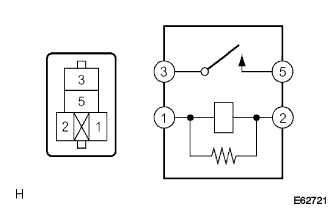
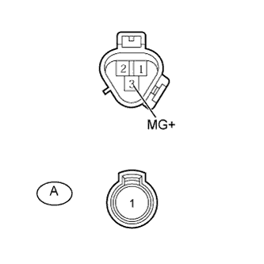
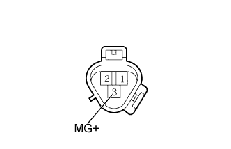
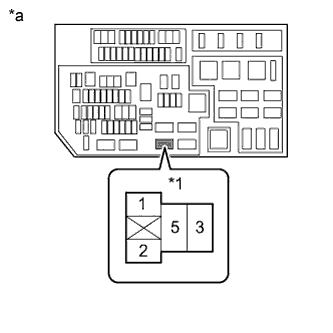
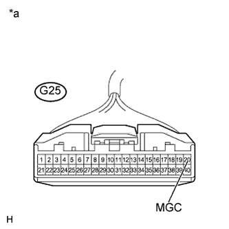

СИСТЕМА КОНДИЦИОНИРОВАНИЯ (для моделей с автоматическим кондиционером) > Цепь электромагнитной муфты компрессора системы кондиционирования |
| 1.ПРОВЕРЬТЕ РЕЛЕ ЭЛЕКТРОМАГНИТНОЙ МУФТЫ (A/C COMP) |
|  |
Извлеките реле A/C COMP из блока реле № 1 моторного отсека, распределительного блока.
Измерьте сопротивление в соответствии со значениями, приведенными в таблице ниже.
| Контакты для подключения диагностического прибора | Режим | Заданные условия |
| 3 - 5 | Напряжение аккумуляторной батареи не подается на контакты 1 и 2 | 10 кОм или более |
| Напряжение аккумуляторной батареи подается на контакты 1 и 2 | Менее 1 Ом |
|
| ||||
| OK | |
| 2.ПРОВЕРЬТЕ КОМПРЕССОР СИСТЕМЫ КОНДИЦИОНИРОВАНИЯ В СБОРЕ |
|  |
Для моделей с 1GR-FE:
Снимите компрессор системы кондиционирования (Нажмите здесь).
Для моделей с 1KD-FTV:
Снимите компрессор системы кондиционирования (Нажмите здесь).
Для моделей с 2TR-FE:
Снимите компрессор системы кондиционирования (Нажмите здесь).
Отсоедините разъем A электромагнитной муфты.
Измерьте сопротивление в соответствии со значениями, приведенными в таблице ниже.
| Контакты для подключения диагностического прибора | Условие | Заданные условия |
| 3 (MG+) - A-1 | Всегда | Менее 1 Ом |
| 3 (MG+) - масса | Всегда | 10 кОм или более |
| Результат | Следующий шаг |
| OK | А |
| NG (для 1GR-FE) | B |
| NG (для моделей с 1KD-FTV) | C |
| NG (для моделей с 2TR-FE) | D |
|
| ||||
|
| ||||
|
| ||||
| А | |
| 3.ПРОВЕРЬТЕ ЭЛЕКТРОМАГНИТНУЮ МУФТУ |
|  |
Подсоедините разъем A электромагнитной муфты.
Подайте напряжение аккумуляторной батареи на электромагнитную муфту и проверьте ее работу.
| Условия измерений | Заданные условия |
| Положительный (+) вывод аккумуляторной батареи → контакт 3 (MG+) Отрицательный (-) вывод аккумуляторной батареи → масса кузова | Раздается звук срабатывания электромагнитной муфты, и происходит блокировка ступицы и ротора. |
| Результат | Следующий шаг |
| OK | А |
| NG (для 1GR-FE) | B |
| NG (для моделей с 1KD-FTV) | C |
| NG (для моделей с 2TR-FE) | D |
|
| ||||
|
| ||||
|
| ||||
| А | |
| 4.ПРОВЕРЬТЕ ЖГУТ ПРОВОДОВ И РАЗЪЕМ (БЛОК РЕЛЕ № 1 МОТОРНОГО ОТСЕКА, РАСПРЕДЕЛИТЕЛЬНЫЙ БЛОК - АККУМУЛЯТОРНАЯ БАТАРЕЯ) |
|  |
Извлеките реле A/C COMP из блока реле № 1 моторного отсека, распределительного блока.
Измерьте напряжение в соответствии со значениями, приведенными в таблице.
| Контакты для подключения диагностического прибора | Положение переключателя | Заданные условия |
| Контакт 1 реле A/C COMP - масса | Замок зажигания в положении ON (ВКЛ) | 11 - 14 В |
| Контакт 5 реле A/C COMP - масса | Всегда | 11 - 14 В |
| *1 | Реле A/C COMP |
| *a | Устройство с извлеченным реле (блок реле № 1 моторного отсека, распределительный блок) |
|
| ||||
| OK | |
| 5.ПРОВЕРЬТЕ ЖГУТ ПРОВОДОВ И РАЗЪЕМ (БЛОК УПРАВЛЕНИЯ СИСТЕМОЙ КОНДИЦИОНИРОВАНИЯ – АККУМУЛЯТОРНАЯ БАТАРЕЯ) |
|  |
Отсоедините разъем G25 блока управления.
Измерьте напряжение в соответствии со значениями, приведенными в таблице.
| Контакты для подключения диагностического прибора | Положение переключателя | Заданные условия |
| G25-20 (MGC) - масса | Зажигание выключено | Менее 1 В |
| G25-20 (MGC) - масса | Замок зажигания в положении ON (ВКЛ) | 11 - 14 В |
| *a | Вид спереди разъема со стороны жгута проводов: (к блоку управления системой кондиционирования) |
|
| ||||
| OK | |
| 6.ПРОВЕРЬТЕ ЖГУТ ПРОВОДОВ И РАЗЪЕМ (БЛОК РЕЛЕ № 1 МОТОРНОГО ОТСЕКА, РАСПРЕДЕЛИТЕЛЬНЫЙ БЛОК - КОМПРЕССОР СИСТЕМЫ КОНДИЦИОНИРОВАНИЯ) |
Извлеките реле A/C COMP из блока реле № 1 моторного отсека, распределительного блока.
Отсоедините разъем C39 компрессора.
Измерьте сопротивление в соответствии со значениями, приведенными в таблице ниже.
| Контакты для подключения диагностического прибора | Условие | Заданные условия |
| Контакт 3 реле A/C COMP - C39-3 (MG+) | Всегда | Менее 1 Ом |
| C39-3 (MG+) - масса | Всегда | 10 кОм или более |
|
| ||||
| OK | ||
| ||